יגאל עבר על הסטוריבורד שוט אחרי שוט. הכיוון הכללי מאושר. בלשונו: "יש פה בשורה מעניינת, יציאה ביצירה. עכשיו צריך ללכת עם זה עד הסוף ולשייף את מה שצריך". רוב ההערות נוגעות לדבר אחד: הדמיון של הרבי בגיל צעיר ובגיל הביניים, ושל הרבנית. לצדן יש כמה תיקוני בימוי ותוכן.
1. מה קבענו
- שיטת התיקון לרבי: לוקחים את הפריימים שיגאל אמר שהרבי דומה בהם לעצמו (סעיף 2), ומתקנים לפיהם את כל השוטים שבהם הוא לא דומה.
- סדר עדיפויות: קודם "האבנים הגדולות" של הרבי, ורק אחר כך הרבנית. הרבי הוא הקאנון וחייבים לדייק בו. ברבנית יש יותר חופש.
- מאייר לשתי דמויות: ליאור שקדי מאייר את הרבי הצעיר ואת חיה מושקה הצעירה. התקציב שסוכם: עד 2,000 ש"ח בסך הכל, כולל ה-1,200 של העבודה הקיימת עם שקדי, כלומר תוספת של כ-800 ש"ח. נדב בודק מול שקדי מחיר ולוח זמנים לסוף השבוע. בינתיים ממשיכים בשאר התיקונים ולא מחכים לו.
- חיה מושקה מוצגת בפנים, לא מוסתרת. פתרון שמסתיר אותה נפסל: "זה יעלה שאלות בסרט, למה בחרת להסתיר אותה". מאיירים קודם את הגרסה הצעירה, ואז מזקינים אותה ב-AI לשני המקומות שבהם היא מבוגרת: קבלת הנשיאות והמשפט. אנחנו מקבלים שהגרסה המבוגרת לא תהיה מדויקת לגמרי.
- האבא (5) והאח (4): לא משקיעים בדמיון. כל אחד מופיע בשוט אחד, "אפשר לחיות עם זה".
- הריי"צ נשאר כמו שהוא. נאמר בשיחה שזו העבודה הכי טובה בסט. גם הרב גוראריה, שנבנה מהתמונה שיגאל שלח, דומה יחסית ונשאר.
- זכויות יוצרים: המסלול הנכון הוא ציור. תמונת הרבי הצעיר שנשלחה בוואטסאפ במהלך השיחה היא לצורך השוואה בלבד. יש לה מקור לא ברור, ובארה"ב היא לא בטוחה לשימוש. עלה בשיחה: "השאלה היא כמה חב"ד ירצו לנסות לא לגרום לסרט לצאת. יש להם יותר כסף לעורכי דין".
- לוח הזמנים: היעד של 22.10 היה מותנה באישור הסטוריבורד, ולכן הוא זז. התאריך החדש ייקבע מול הערוץ. מדברים שוב מחר בבוקר, בסביבות 10:00.
2. איך הרבי צריך להיראות
יגאל הצביע על הפריימים האלה כנכונים. הם הרפרנס לכל התיקונים.
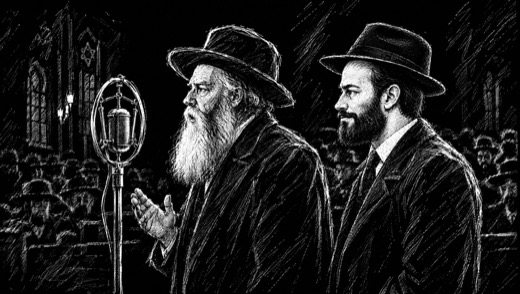
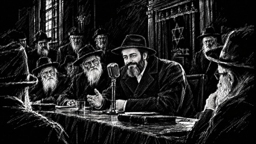
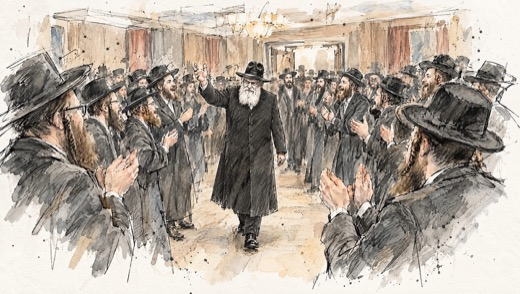
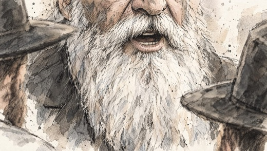
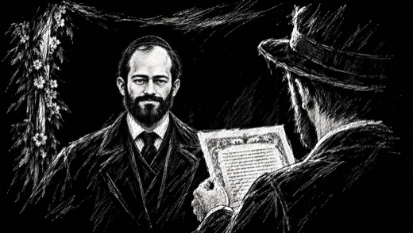
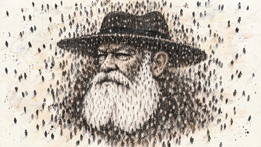
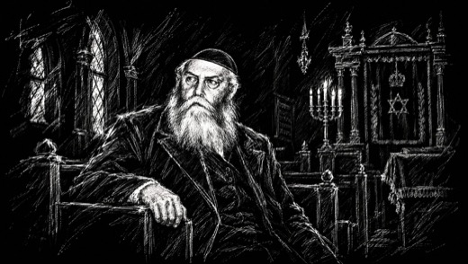
מה חוזר בהערות על הפנים
- זקן מרובע ומלא. גם בצעירותו הזקן היה ארוך ומרובע, רק שחור. בשוטים הלא דומים הזקן צמוד ללחיים.
- פחות מפרצים ומצח קטן יותר. המצח שלו מעולם לא היה גדול כל כך.
- פנים צרות יותר. "בתמונות השחור-לבן הוא היה קצת יותר צנום".
- בצעירותו: עם כובע מצחייה וזקן מרובע. "תסתכלו על תמונות שלו בשחור-לבן ותראו שהוא נראה שונה".
- במבוגר: עיניים כחולות. אם רואים מצח, הוא מעט נמוך. בזקן יש פס בהיר באמצע.
- מה יוצא כרגע במקום הרבי: "יהודה לוי" בצעיר, "אריאל אטיאס" בשוטים עם המפרצים.
3. התיקונים, שוט אחרי שוט
סדר השוטים כמו בסטוריבורד. התמונה היא הגרסה שיגאל ראה. דמיון פנים ודמות. בימוי קומפוזיציה, לבוש וסביבה. תוכן החלפת הדימוי. לבירור לא חד בהקלטה, לוודא לפני ביצוע.
| שוט | עכשיו | מה יגאל ביקש |
|---|---|---|
| 4האח | 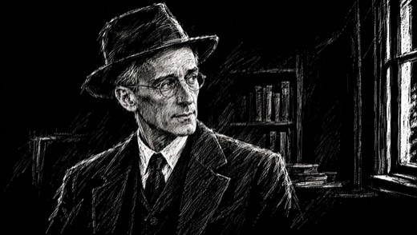 | דמיון לא דומה. הוחלט לא להשקיע, שוט אחד בלבד. |
| 5האב | 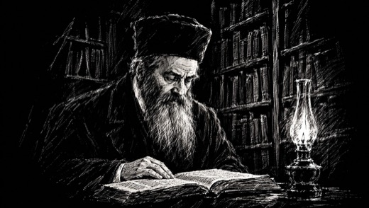 | בימוי הכובע הגבוה לא נכון, "הם לא הסתובבו עם כזה". להחליף לכיפה. הדמיון: כמו באח, לא משקיעים. יגאל ציין שיש תמונה אחת של הרב לוי יצחק, ואפשר לבדוק אם היא חופשית. |
| 8מול המראה | 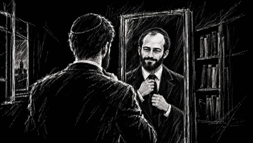 | דמיון "כבר ממש לא דומה לו". מפרצים גדולים מדי, "אריאל אטיאס". זקן מרובע, מצח קטן יותר. |
| 23/בהכלה והחתן | 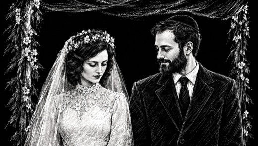 | דמיון כשהוא מסתכל עליה רואים מפרצים ו"פנים של יהודה לוי". ב-23/א הוא דומה יותר, לתקן לפיו. הזקן: ארוך ומרובע, לא צמוד ללחיים. לבירור יגאל זרק שתי הצעות בימוי לחתונה. האחת: תנועת דולי מצד לצד, שמתחילה מהצד השמאלי של החתן. השנייה: לצלם את הזוג מאחור או מעבר לכתף, ולא חזיתית. על השנייה נאמר בשיחה "לא בטוח שזה נכון, אבל אפשר". לא הוכרע. |
| 25ברחובות פריז | 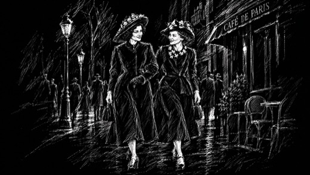 | לבירור בהקלטה נשמע "23 ואחר כך גם 25, זה לא הם". בשוט 25 מופיעות הרבנית וחברה, ולכן לא ברור אם יגאל התכוון לשוט הזה. לוודא איתו. |
| 28/בהחבל נמתח | 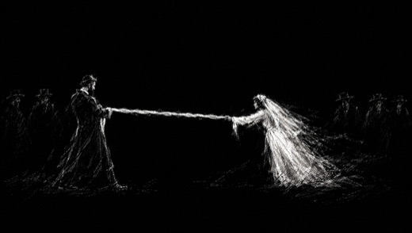 | בימוי החתן והכלה עומדים רחוקים מדי, כמעט באוויר. זה נראה כמו טקס, "קצת יותר מדי שמימי". להוריד לקרקע, אולי להוסיף את הקהל. את 28/א (הידיים על החבל) הוא אהב מאוד. |
| 30שיחה על הספסל | 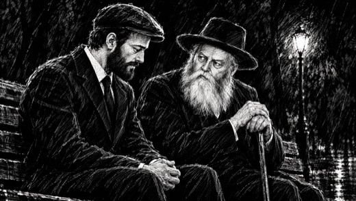 | דמיון שוב "יהודה לוי, יו ג'קמן". שיער וזקן מרובעים יותר. "בעיקר הזקן שלו, כל השאר בסדר". אהב את הרצף של פריז והשיחות. |
| 31בספרייה | 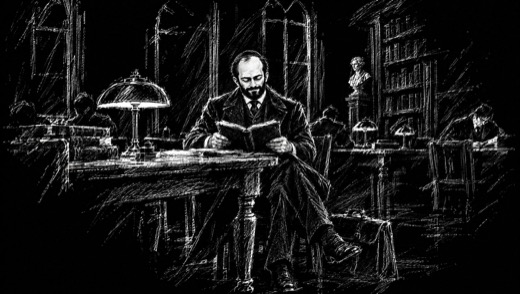 | דמיון ברשימת הצעירים שלא דומים: 8, 23, 30, 31, 35. |
| 34המכתב במגירה | 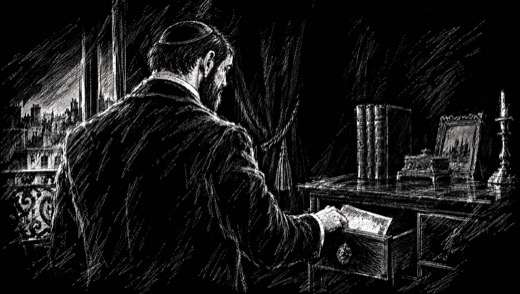 | דמיון "יהודה לוי סטייל". לפי תמונות השחור-לבן: כובע מצחייה, זקן מרובע, פנים צרות יותר. |
| 35מוקף חסידים | 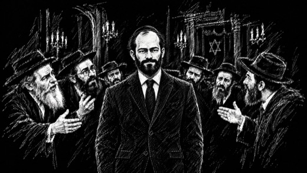 | דמיון לא דומה. "מזכיר נורא את החתונה", כלומר אותה בעיה כמו ב-23/ב. |
| 43בין החסידים בברוקלין | 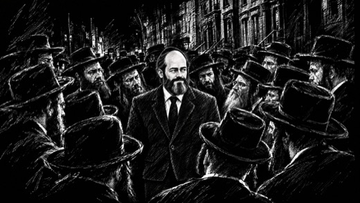 | דמיון כאן הוא כבר מבוגר יותר ונראה צעיר מדי. להזקין מעט, זקן מלא יותר. לבירור יגאל אמר "כבר 51". לא ברור אם זה גיל או השנה 1951. לבדוק את התקופה בסרט. |
| 49עיני הרבי | 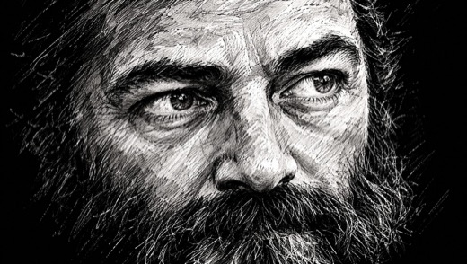 | דמיון אהב את השוט. לתקן רק את השפתיים: "פחות נושך שפתיים". |
| 60שיחה בבית | 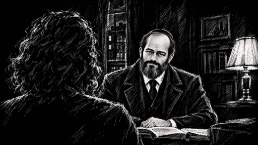 | דמיון "יותר מדי יהודה לוי", "זה פחות הוא". |
| 77קשירת המטפחת | 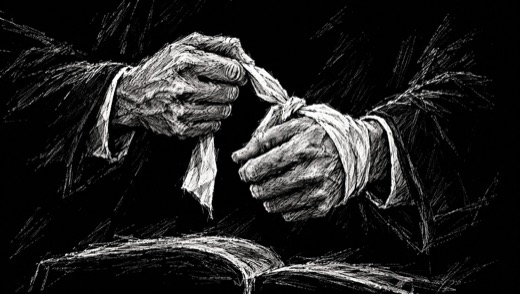 | בימוי הקשירה נראית כמו סרט או רצועה. להפוך אותה ליותר מטפחת. |
| 82/במדבר ברחוב | 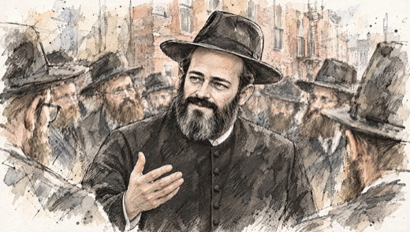 | דמיון צעיר מדי. להזקין לכיוון 84 ו-86: זקן מרובע ומלא, עיניים כחולות, מצח קטן יותר. "להוריד קצת את המצח". |
| 101הרב שך | 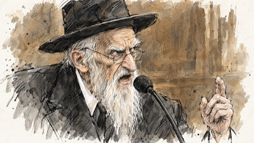 | תוכן יש וידאו של הרב שך בלי בעיית זכויות, ולכן לא משנה שהציור לא דומה. לבירור לא ברור אם הפריים המצויר יורד ומשתמשים בווידאו, או שהוא נשאר. |
| 106שני האדמו"רים | 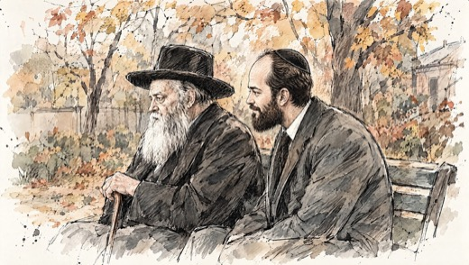 | דמיון "מצד ימין זה לא הרבי מליובאוויץ'". |
| 112הרבנית ליד החלון | 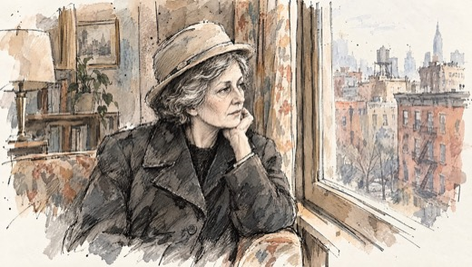 | דמיון "זה פחות הרבנית", כי עוד אין לה דף דמות. מתקנים אחרי האיור (החלטה 4). |
| 113ליבוביץ | 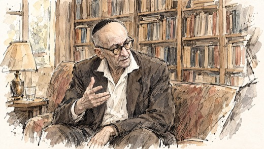 | תוכן כמו ב-101: יש וידאו של ליבוביץ בלי בעיית זכויות. לבירור אותה שאלה כמו ב-101. |
| 119רגע של מחשבה | 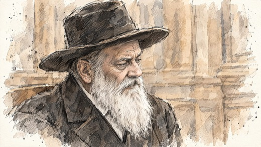 | בימוי "נראה כמו קפטן". הכובע הוא לא כובע חב"די. צריך טאץ'. |
| 137לחיצות היד א עד ד | 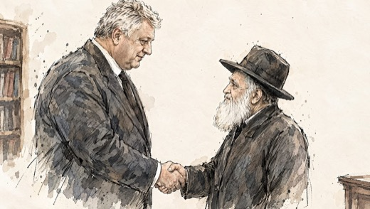 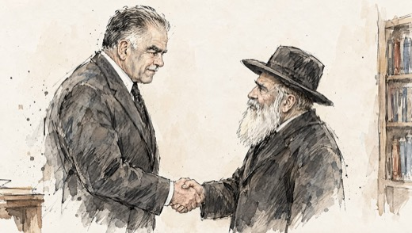 | בימוי דמיון הרבי תמיד יושב, והם באים אליו. כרגע הוא קטן ושמיר ושרון גדולים מעליו, וצריך את ההפך. רקע צפוף, אנשים על המדרגות מאחור, כמו במציאות. אפשר פריים קטן (small frame). הדמיון של שמיר ושל שרון צריך טאץ'. בקומפוזיציה: הרבי תמיד מימין בפריים, אז בחלק מהשוטים להפוך. נאמר בשיחה שאחד השוטים צויר בעמידה בכוונה, כדי שלא יהיה דומה מדי לתמונה המקורית. יגאל רוצה שהרבי יישב בכולם. |
| 143לחישה באוזן | 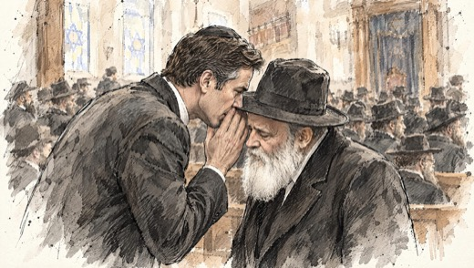 | דמיון ביבי לא דומה לביבי, "יותר יועז הנדל". הרבי בסדר. את רגע הלחישה אהב מאוד. |
| 145צלליות חמושות | 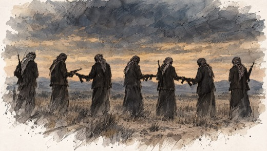 | תוכן להחליף את הדימוי. בדקה 41 מדובר על הטרור של שנות ה-80 וה-90, ולא על הפרעות של תקופת ערפאת. מה הוא רוצה לראות: אוטובוס בחדרה או קפה מומנט בירושלים, פיגוע מתקופת אוסלו. (עלו גם בן לאדן ומגדלי התאומים, והוחלט לא לצייר אותם.) |
| 149שוב על הספסל |  | דמיון שוב "אריאל אטיאס", פחות הוא. זקן ארוך. |
| 158הרבנית עונה | 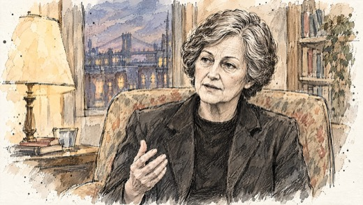 | דמיון "עשיתם אותה אמריקאית". צריכה להיות יותר מקומטת, עם כיסוי ראש. |
| 168מצחצחים כפתורים | 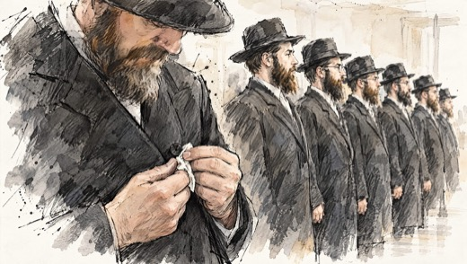 | בימוי הצעה: קלוז-אפ על הידיים שמצחצחות את הכפתורים. אהב את הראשים המורכנים, גם של הילדים. |
| 175, 177המרפסת | 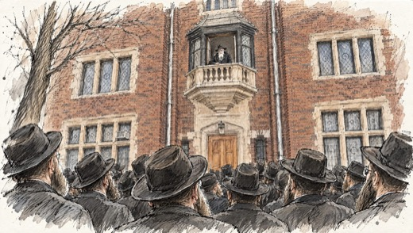 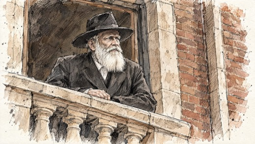 | בימוי לדברי יגאל, בסרט זו לא מרפסת הבית אלא המרפסת של בית הכנסת. "תראו את הסרט". 177 כרגע בחוץ, "כמו הרצל בבאזל", וזה לא הרעיון. לבירור לבדוק בסרט (50:49 עד 51:31) איפה בדיוק נמצאת המרפסת, ולצייר לפי זה. |
| 196פני הרבי | 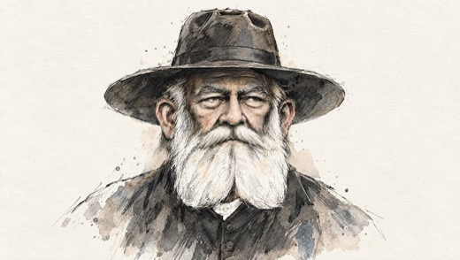 | דמיון "זה לא הרבי מליובאוויץ'". לא רואים לו מצח, ובזקן חסר הפס הבהיר באמצע. 197 דומה יותר. הוחלט: ב-196 חוזרים לציור, ובונים לפי 197. |
4. מה אושר ואהב (לא נוגעים)
- הפתיח: ההתחלה מדף ריק, "מתחילים מאפס לצייר אותו".
- 6, 7: מפת העולם ("חמוד"), הצעיר בחליפה ברחוב.
- 20: הריי"צ. 23/א: תחת החופה. 28/א: הידיים על החבל.
- 45, 47, 48: הבעל שם טוב, נאום האדמו"ר השישי, המיקרופון הישן.
- 56: מבט ישיר.
- המעבר לצבע סביב נאום ההכתרה. "מאוד אוהב את האפסקיילינג הזה".
- 84, 86/ב והשוטים של טנקי המבצעים, הכניסה, הילדים והדולרים.
- 107: השקית בחלון הקדילק והפתקים באוהל, "מעולה". 110: הרבי והילדים.
- 143: רגע הלחישה של ביבי (רק הדמיון של ביבי לתיקון).
- 154, 155, 157: התפילה באוהל, הקדילק בערב, עורך הדין שואל.
- הסוף: הריקודים, הספרים שחוזרים, הלוויית הרבנית, "ברוך דיין האמת", הפרשן על המסך, השלוחים. "שמח שיש סיום אמנותי".
5. הערות כלליות על הסגנון
- הרעיון שמאחורי הציור: הסיפור של הצייר על הרבי, הרבי כפי שהחסידים רואים אותו ולא כפי שהוא תועד. זה צריך לעבור בתוך הסרט, ברגעים שבהם רואים מישהו מצייר. עלתה השאלה אם הצופה יבין למה בחרנו לצייר ולא להשתמש בצילומים. רעיון שעלה לפרומו: "הסרט שחב"ד לא רוצים שתראו".
- השחור-לבן: אוהד, מעצב הפסקול, אמר שהשחור-לבן מזכיר את "חידת שושני". יגאל העלה את זה כמחשבה, אולי לא שחור-לבן נקי. נאמר בשיחה ש"חידת שושני" היה בספיה חומה ובתלת מימד, ושכאן מדובר בציורי נגטיב. לא הוכרע.
- בגימור: להוסיף בהירות על הלבן, "שהלבן יהיה זוהר".
6. נקודות לבירור
ההקלטה לא הייתה חדה במקומות האלה. כדאי לוודא לפני שמבצעים.
- 25: האם ההערה "זה לא הם" נוגעת לשוט הזה.
- 43: "כבר 51". גיל או שנה.
- 101 ו-113: האם הפריים המצויר יורד לטובת הווידאו האמיתי.
- 175 ו-177: איפה המרפסת בסרט.
- 23 ו-28: האם עושים את הצילום מאחור או מעבר לכתף בחתונה, ואת תנועת הדולי.
- השחור-לבן: נשאר כמו שהוא, או בודקים גוון אחר.
7. הצעדים הבאים
- נדבשולח הודעה לליאור שקדי: מחיר לשתי הדמויות (הרבי הצעיר וחיה מושקה הצעירה) ולוח זמנים לסוף השבוע.
- יגאלמתאם תאריך מסירה חדש מול הערוץ. שיחה מחר בבוקר, בסביבות 10:00.
- איתןמתקן את שוטי הרבי לפי הרפרנסים מסעיף 2, ואת תיקוני הבימוי והתוכן (5, 28/ב, 77, 119, 137, 145, 168, 175 ו-177).
- איתןאחרי האיור: דף דמות לחיה מושקה הצעירה וגרסה מבוגרת, ותיקון שוטי הרבנית (112, 158 והשאר).
- כולםסגירת שש הנקודות שבסעיף 6.